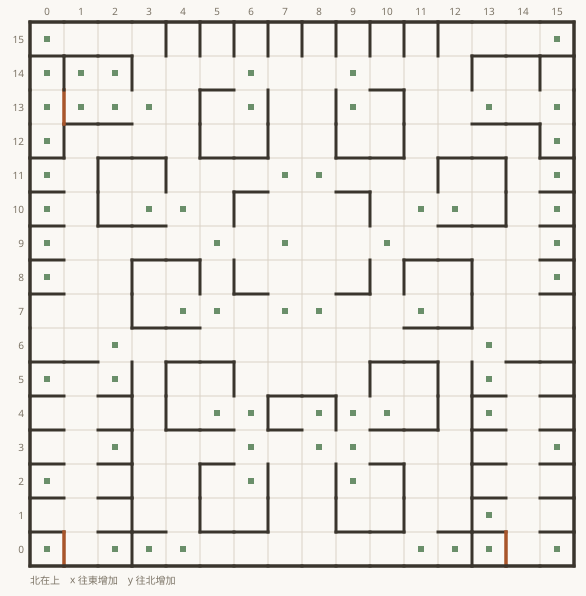
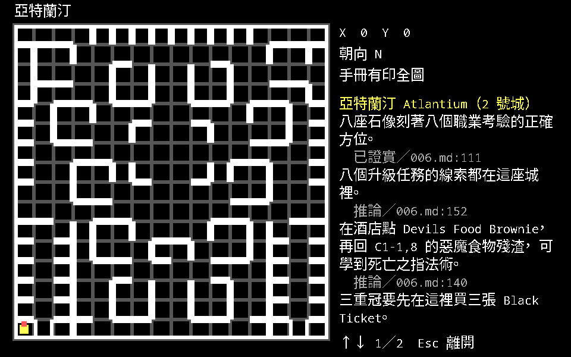
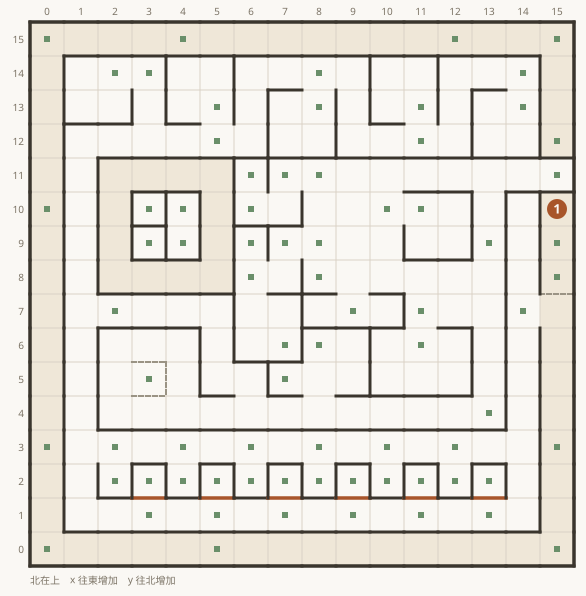
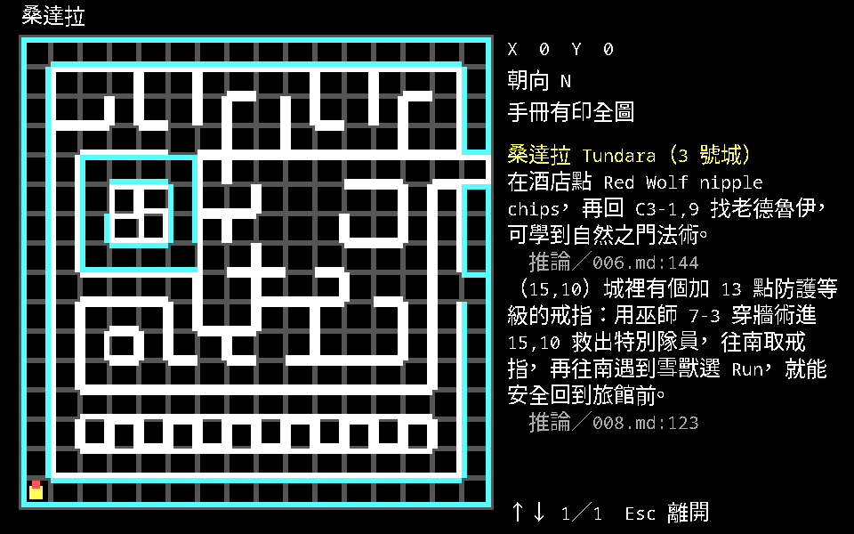
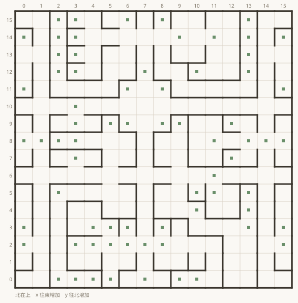
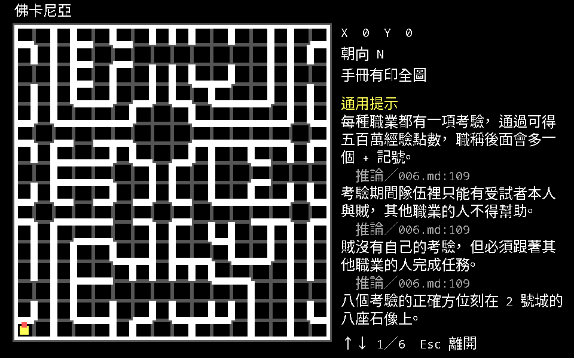
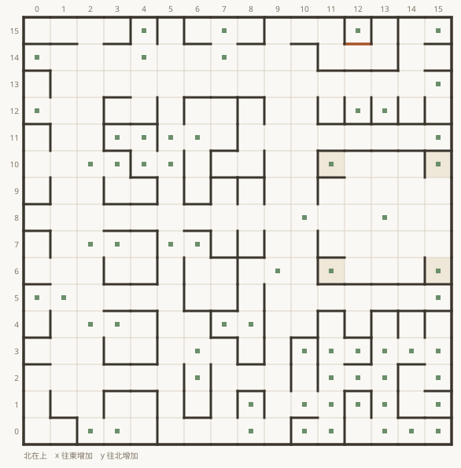
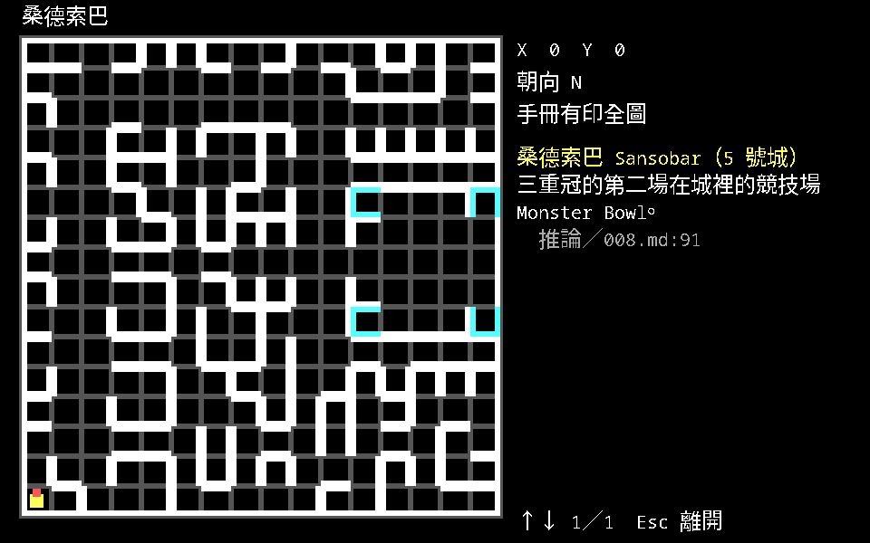

五座城
科隆有五座城，編號 1–5，分別是米德格特、亞特蘭汀、桑達拉、佛卡尼亞、桑德索巴。 每座城都有旅店（存檔）、神廟（治療）、訓練場（升級）與商店，另外各有幾樣別處沒有的東西： 傳送門、法師公會、第二技能的教學點、通往地下城的入口。
每一節的設施代號來自珍017 說明書的地圖冊（pp.4／6／8／10）， 那是原書把英文與中文並列的部分，也是官方譯名的主要來源。 代號在原書是標在地圖上的位置，這裡只有清單 —— 我們沒有把那些字母對回座標， 所以不編一份看起來對得起來的表。
1 號城 米德格特 Middlegate

MAP.DAT ＋ ATTRIB.DAT 畫出
地圖 0 牆 186 面、門 3 道、看不見的屏障 0 面、事件格 56 格
- 114,8莫里旅行社在城裡 14,8；先找它再去 C3-7,9 搭船，島上的設施才會有正面效果。推論／007.md:112
- 沒有座標的提示
- 三重冠的第一場在城裡的競技場 Arena。推論／008.md:91
出發的城。它在 C2 區的 (7,3)，這一點原版資料與說明書一致。
三重冠的第一場（Arena）在這裡。莫里旅行社在城裡 (14,8) —— 這一步不能跳過： 先找旅行社，再去 C3-7,9 搭船，否則莫里島上那些設施會給你相反的效果。
說明書地圖冊沒有收 1 號城（地圖冊從 p.3 的 2 號城開始），上冊 p.37 附的那張平面圖 才是 1 號城，標了旅店、商店、神廟、訓練中心與牆門的位置。
上冊 p.38 的「筆者註」還留了一條：在第一個城市 X:8 Y:4 向南有一個噴泉， 喝下去會有暫時的鷹之眼、巫師之眼效果。
2 號城 亞特蘭汀 Atlantium

MAP.DAT ＋ ATTRIB.DAT 畫出
地圖 1 牆 188 面、門 3 道、看不見的屏障 0 面、事件格 67 格
- 沒有座標的提示
- 八座石像刻著八個職業考驗的正確方位。已證實／006.md:111
- 八個升級任務的線索都在這座城裡。推論／006.md:152
- 在酒店點 Devils Food Brownie，再回 C1-1,8 的惡魔食物殘渣，可學到死亡之指法術。推論／006.md:140
- 三重冠要先在這裡買三張 Black Ticket。推論／008.md:91
- 三重冠的最後一場在這裡的競技場 Coloseum，怪物相當強。推論／008.md:91
這座城是八大職業考驗的線索總站，也是三重冠的頭尾兩站。地圖冊記它在 A4 的 (13,10)。
八座石像上刻的訊息，說明書 p.4 逐則抄下來了。這八則就是八個考驗的位置：
| 代號 | 訊息原文 | 指的是 |
|---|---|---|
| T1 | D2-7.0.Juror's of Mt Fdrview |
D2-7,0 的說明石板（原書把 Farview 排成 Fdrview） |
| T2 | B3-5,14.Dread Knight |
武士考驗 |
| T3 | B2-11,2.Baron Wilfrey's lair |
弓箭手考驗 |
| T4 | C4-0,15.Brutal Bruno |
野蠻人考驗 |
| T5 | D4-8,9.Therixen Dawn |
忍者考驗 |
| T6 | Isle of the Ancients Evil Wizard Ybmug L23 R46 Good Wizard Yekop L64 R32 |
兩座巫師塔的門牌數字 |
| T7 | C1-10,15.Corak's Soul |
牧師考驗 |
| T8 | Forbidden Forest 8,8 |
遊俠考驗（入口 C3-15,0） |
T6 那一則的左右順序跟雜誌寫的相反，見矛盾與勘誤。
其他設施（說明書 p.4）：
| 代號 | 說明 | 代號 | 說明 |
|---|---|---|---|
| A | 傳送門—至佛卡尼亞 | L | 酒店 Boar's Tongue Tavern |
| B | 奧林匹克運動場 The Olympic Trial—出售運動家技能 | M | 出口 |
| C | 神秘法師公會 Cabalist Mage Guild | N | 旅店 Carrige Inn |
| D | 奧德賽的口才訓練班 Odysseus' Tongue—出售語言家技能 | O | 鐵工廠 |
| E | 怪物和亞特蘭大 Hippoments & Atlanta—出售勇士技能 | P | 監獄 |
| F | 訓練場 | Q | 通往地下城 |
| G | 秘密通道—通往米德革特 | R | 特別隊員 |
| H | 參加地方性法師公會 | S | 古鑰匙店 Classic Key Shoppe—獲得 Black Key |
| I | 艾魯斯尼亞神殿 Eleusinian Temple | U | 巫師／牧師 |
| J | 大圓形演技場 The Colosseum | V | 武士／戰士 |
| K | 訓練場主人 | W | 死囚牢 |
酒店在這裡有一件事要做：點 Devils Food Brownie，再回 C1-1,8 的惡魔食物殘渣， 可以學到死亡之指法術。
3 號城 桑達拉 Tundara

MAP.DAT ＋ ATTRIB.DAT 畫出
地圖 2 牆 233 面、門 6 道、看不見的屏障 4 面、事件格 75 格
- 115,10城裡有個加 13 點防護等級的戒指：用巫師 7-3 穿牆術進 15,10 救出特別隊員，往南取戒指，再往南遇到雪獸選 Run，就能安全回到旅館前。推論／008.md:123
- 沒有座標的提示
- 在酒店點 Red Wolf nipple chips，再回 C3-1,9 找老德魯伊，可學到自然之門法術。推論／006.md:144
在 A1 的 (12,3)。這座城的酒店同樣有一道菜要點：Red Wolf nipple chips， 再回 C3-1,9 找老德魯伊，可以學到自然之門法術。
城裡藏了一個 加 13 點防護等級的戒指。雜誌寫的路線是：用巫師 7-3 穿牆術進 (15,10) 救出特別隊員，往南取戒指，再往南遇到雪獸選 Run，就能安全回到旅館前。
設施（說明書 p.6）：
| 代號 | 說明 | 代號 | 說明 |
|---|---|---|---|
| A | 傳送門—至桑德索巴 | L | 習得宗教家技能 |
| B | 桑達拉配備旅店 Tundaran Arms Inn | M | 國際市場—習得商人技能 |
| C | 通往野外 | N | 哥倫布的六分儀座—習得領航員技能 |
| D | 武器店 Thundrax Weaponry | O | 聖靈神廟 White Dove Temple |
| E | 酒店 Lucky Dog Saloon | P | 神秘地法師公會 Mystical Mage Guild |
| F | 傳送門—至佛卡尼亞 | Q | 冷酷的怪物 |
| G | 通往地下城 | R | 出現一個按鈕 |
| H | 桑達拉終身法師公會 | S | 訊息：怪物出沒的告示 |
| I | 魔法中心 Enchancement Center | T | 老哈娜的翡翠戒指 |
| J | 尋人啟事 | U | 特別隊員 |
| K | 怪物冷凍庫 | V | 監獄 |
4 號城 佛卡尼亞 Vulcania

MAP.DAT ＋ ATTRIB.DAT 畫出
地圖 3 牆 231 面、門 0 道、看不見的屏障 0 面、事件格 70 格
在 E1 的 (3,4)。《軟體世界》沒有給這座城任何提示 —— 上面那張圖是為了不缺一張才畫的， 不是雜誌有寫。城裡四座石像的字倒是抄在說明書裡，四句連起來就是這一代的主線：
在時間之內拯救科隆 他們握有你須找回的劍之刃根 在他們的巢穴中都有一個國王 水，火，和空氣
設施（說明書 p.8）：
| 代號 | 說明 | 代號 | 說明 |
|---|---|---|---|
| A | 傳送門—至桑達拉 | M | 危險的野外地區 |
| B | 旅館 Hotel Four | N | 岩漿手榴彈 Lava Grenada |
| C | 出口 Vulcanian Export Co—至亞特蘭汀 | O | 習得武器專家技能 |
| D | 通往地下城 | P | 法師公會 Blackrock Mage Guild |
| E | 神廟 Vulcan Temple | Q | 一個天秤（顯示隊員的防護百分比） |
| F | 武器店 | R | 參加地方性法師公會 |
| G | 酒吧，訊息 C3,6 C2 11,1 |
S | 岩漿鎖店 Lava Locksmith—紅鑰匙 |
| H | 訓練場 Traning Academy | T | 出售門士技能 Disembowelment R Us |
| I–L | 四座石像（上面那四句） | U | 軍官訓練學校 Sergeant Pain School—出售戰士技能 |
5 號城 桑德索巴 Sansobar

MAP.DAT ＋ ATTRIB.DAT 畫出
地圖 4 牆 202 面、門 1 道、看不見的屏障 0 面、事件格 64 格
- 沒有座標的提示
- 三重冠的第二場在城裡的競技場 Monster Bowl。推論／008.md:91
在 E4 的 (4,10)。三重冠的第二場（Monster Bowl）在這裡。
設施（說明書 p.10）：
| 代號 | 說明 | 代號 | 說明 |
|---|---|---|---|
| A | 傳送門—至米德革特 | L | 大使館 The Embassy—出售外交家技能 |
| B | 旅店 Hourglous Inn | M | 出售扒手技能 Sly's Opportunities |
| C | 訊息：加入法師公會，200 Gold | N | 競技能訓練場 Shelk Training Arena |
| D | 傳送門—至桑達拉 | O | 武器店 |
| E | 城鎮出口 | P | 與怪物戰鬥 |
| F | 神廟 Temple Benedictus | Q | 訓練場主人 |
| G | 酒館 Red Lantern Tavern | R | 巫師之眼法術 |
| H | 打門？Y/N | S | 乞丐的禮物（巫師眼法術） |
| I | 法師公會 Whirlwind | T | 通往地下城 |
| J | 鎖店（黃色鑰匙） | U | 訊息：雪獸在城牆裡有個祕密巢穴 |
| K | 出售賭徒技能 Sandy Dunes | V | 訊息：第 93 天是 Nature's day |
「第 93 天是 Nature's day」值得記著 —— 這一代有好幾件事跟日期綁在一起， 馬戲團也只在每年第 140–170 天開張。